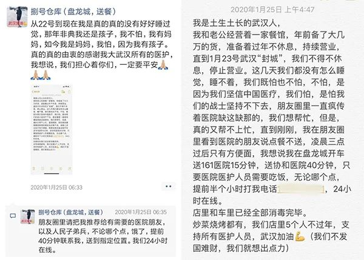
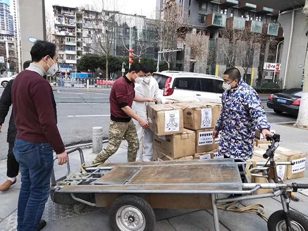
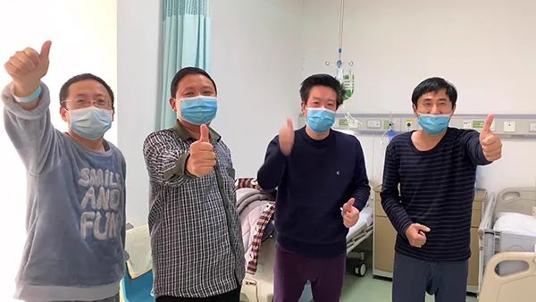
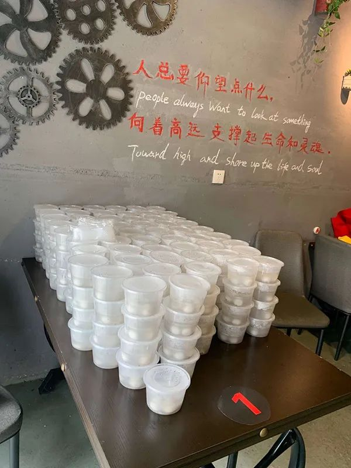

抗击过非典的护士长，来了武汉
原文链接 备份链接 文/六筒 李岩半年前刚去过武汉，和家人去旅游，主要想看看黄鹤楼。那还是夏天，热气蒸得人头上冒烟。高温挡不住蜂拥的游客，摩肩接踵，拥塞的车辆在大道上艰难挪动。“真是个大都市”，她想。 李岩是河北医科大学第二医院呼吸与危重 …
澎湃新闻特约撰稿 张小莲 记者 朱莹 温潇潇 实习生 刘昱秀
由张学友演唱，周杰伦谱曲，方文山填词的歌曲《等风雨经过》(02:54)
距离武汉封城，已经过去了40天。
这40天，有人离世，有人痊愈，有人还在忍受病痛。有人日夜奋战在一线，有人匆匆奔波在路上。有人彻夜失眠，有人在凌晨四点做了一个重要的决定……这座城市付出了沉重的代价，也熬过了最艰难的时期。
无数人的每一个瞬间，构成了武汉的40天。因这无数人的无数瞬间，一切在慢慢变好。
这是武汉，不能后退的理由。
2月10日，动车组列车停放在武汉动车段的存车线上（无人机照片）。新华社 图
01
无声的蔓延
去年12月30日，许世庆和一帮中老年歌友去KTV唱歌。年过半百，快退休了，他没别的爱好，就喜欢唱歌，这已经是他这个月第4次去KTV了。KTV距离华南海鲜市场只有一两公里，环境不错，每天人很多。
K房封闭，开着空调，大家边唱边跳，气氛欢乐。许世庆为了给大家拍视频，时而蹲下来，时而站着高高的。
他后来回想，应当是在这次聚会中，被感染了新冠病毒。
他没有去过海鲜市场，也没有接触过动物。平时要么在家里，要么在上班。他是一名央企单位的保安，一个人坐在监控室里，极少和人近距离接触，目前单位还没有其他人感染。而那次聚会的歌友中，有几个人都住院了。
聚会回来后，他感到浑身发冷，还有些发烧，他关了门窗，把家里空调开得很热。当时以为只是普通感冒。之后有个同学聚会，大家都迁就他的上班时间，他本来有点纠结，最后还是参加了，要了一副公筷，吃得不多。事后他感到庆幸，他的同学没有人感染。
1月2日，正在上班的许世庆感到很不舒服，去同济医院拍片子，医生说有点严重，建议去武汉市肺科医院，那里有全科专家正在搞发热门诊。随后他便去了肺科医院，没确诊，开了一些药回家吃。
过了两天他发高烧，又去了肺科医院。医生说他有肺气肿、支气管扩张，在普通病房住了两天，才转到隔离病房。在他住院的第二天，妻子也发烧入院，后来被送去金银潭医院。
此后40多天里，包括春节，他都在病房中度过。
在许世庆发病的同时，郭琴也感觉到，来医院的发热病人开始增多了。
郭琴是武汉大学中南医院急诊科的一名护士。去年12月底，医院下发了通知，对发热病人有一套专门的就诊流程，需要发口罩、登记信息。几天后，急诊病房改造为隔离病房，专门收治这类患者。
郭琴说，急诊科风险较高，1月7日起就开始穿防护服；在此之前，他们会戴外科口罩，如确定患者有不明原因肺炎，也会穿防护服。
1月6日，郭琴初次接触新冠肺炎患者。那人50多岁，从菜场买菜回家后接连高烧，入院时已是重症，生命体征不稳定，她在ICU参与了抢救。之后一周，她又接触到5位后来被确诊的患者。
那阵子，她每天工作时间很长，有时只能睡四五个小时，直到身体出现不适。
1月12日，她上完10个小时的夜班，回家后身体一直发冷，到了晚上开始发烧。她怀疑自己可能感染了，没再和家人接触，自己睡一间房，吃了抗病毒的药，喝了大量的水。
第二天早上起来，感觉头痛、四肢疼痛，下午烧到了39摄氏度。丈夫把她送去医院，查血、做CT、做核酸检测。确诊结果是两天后才告诉她的。当时同事只是委婉地表示，怀疑是新冠肺炎，需住院观察。并安慰她说：“不要害怕，有我们在，我们这么优秀，对吧？”
她嘴上说“我还好”，心里还是有些害怕。那天晚上，她住进隔离病房，和之前护理的患者住在一起。她不由想起那个重症病人，入院后出现呼吸窘迫综合征，最后上了体外膜肺仪（ECMO），才抢救回来。她担心，自己会不会也发展成那样？
郭琴不会忘记，生平第一次作为病人躺在病床上度过的那个夜晚。
她整夜没能入睡，伴有发热、恶心、乏力和疼痛。耳边回响着监护仪的滴滴声，病人的呻吟声，治疗车轮子的滚动声，还有同事急匆匆的脚步声。
当晚值班的同事是郭琴的徒弟，一个年轻的小姑娘，刚进来一个月，“她一来接班，就说：‘郭老师，等我不忙的时候，就来陪你说话’。”但那天晚上她特别忙，一晚上没停。郭琴心疼她，却帮不上忙。
“每次她停下来站在我的床边，我可以感受到，她在看着我。”郭琴想到自己以前值夜班的时候，也是这样到每个病人床边，观察他们呼吸是否顺畅平稳，睡得怎么样。有老人要上厕所，还要帮忙脱穿裤子、抱上床。
当郭琴成为那个被照顾的角色，才体会到，原来医护人员这样忙碌、辛苦，原来病人真的会不忍心麻烦护士，不好意思喊人。
也许正是那个无眠之夜的某一刻，让她暗自下定决心，等病好了，就回来上班。
02
凌晨四点的朋友圈
虽然早期已有一线医护感染，但大部分普通百姓真正认识新冠肺炎是从1月20日开始的。那天，钟南山院士在央视采访中确认，“新型冠状病毒肺炎是肯定的人传人”。
然而，居住在武汉郊区盘龙城的邱贝文一家后知后觉。
邱贝文的丈夫万路在盘龙城开发区第一小学旁经营着一家海鲜烧烤店，基本上每星期都要去华南海鲜市场进一次货，那阵子店里的货比较充足，隔了10来天都没去市场，正好错开了出事的时间。
后来他们看报纸才知道，其中一家有感染的店就是他们经常进货的商铺。那家店已经有人因新冠肺炎去世了。
邱贝文当时有点吓到，后来又释然，“因为我们拿的不是野味，只是牛肉，而且十多天没去了，”邱贝文说，她老公也觉得很庆幸，两人之后没怎么关注新冠肺炎的讯息，以为就是“可以控制”的小传染病。
1月20日左右，万路还在为店里采购各种肉类海鲜，以备营业到大年初六。之后两天，封城的消息传来传去，大家开始谈论肺炎，但邱贝文感觉，郊区的人对这个病没什么概念，即便在封城后，很多人也没有意识到疫情的严重性。
2月中旬封控小区之前，她还经常看到有些人出门不戴口罩，她过去劝说，对方不以为意。
封城后，每天看着网上各种信息，朋友圈里也在传医护人员求助的截图，邱贝文揪心到睡不着觉，心里开始有个念头在滋长。
1月24日除夕夜，身边在医院上班的朋友发来一段语音，一段崩溃的哭诉。这压倒了邱贝文的“最后一根神经”，她无法再继续袖手旁观，必须要做点什么。
在丈夫万路眼中，邱贝文那天晚上“边看边流泪”，捧着手机在编辑朋友圈，犹豫了很久。他不知道妻子在想什么，先睡着了。
这条后来登上微博热搜的朋友圈，在25日凌晨06:33发出来了。

1月25日，邱贝文发的朋友圈。除标注外，文中配图均为受访者提供
“我在盘龙城，开车送161医院15分钟，送协和医院40分钟，只要医院医护人员需要吃饭，无论哪个点，提前半小时打我电话153****1171，24小时在线。”
早上六点多，第一通电话打进来了，此后连续两三天24小时电话都没停过。起初很多人打电话只是为了核实、转发，此后才主要是医护人员。
被电话声吵醒后，万路才知道妻子瞒着他做了这么大一个决定。刚开始他有点蒙，“挺无语的”，但还是觉得这件事值得一做，只是要量力而行。
其实在发这条朋友圈之前，邱贝文已经考虑一天了。“不是因为怕感染，我当时对感染一点概念都没有，我想的第一点是人手够不够，能不能做？”她事先问过6位员工，他们都很支持，但朋友圈发出来后，因家里人反对，都不能到场。
正发愁着，“后援军”就到了。那条朋友圈她屏蔽了爸妈，却忘了屏蔽其他家人。尤其亲妹妹知道后特别担心，“骂骂咧咧”地说她，“我们姐妹俩很爱彼此，她觉得我要考虑孩子，但又很想支持。”于是，妹妹带着妹夫来了，万路的弟弟和妹妹也加入了。
当天上午，万路到超市采购了三千多元的蔬菜、鸡蛋和大米，同时作为唯一的厨师掌勺，其他人负责准备食材和装盒打包。但除了万路，其他人平时都没怎么下过厨房，邱贝文更是连菜刀都没碰过。
第一天“手忙脚乱”地做了180份盒饭，两荤一素，每份15元。邱贝文说，原本想定价10元以内，但菜价贵，这个价格做不了多久就会亏到做不下去。“我们是小本生意，我们一定要收费，但一分钱不赚。”
订单量与日俱增，从两三百份涨到八九百份。后来婆婆叫上公公，公公又喊了爸爸，除了在家带孩子的妈妈，一大家子9口人全上阵了。最忙时，一天要做将近一千份饭。9个人从早上8点忙到晚上12点，中间几乎没得休息。有一次为了准备第二天的食材，切菜切到凌晨两三点。
超市10点开门，限定人数，负责采购的公公每天一早在门口排队，第一个进去。超市人流密集，但是没有办法，他们没得选择。菜市场都关了，离得最近的批发市场环境更糟糕，那里的人连口罩都不戴，或者戴了口罩把鼻孔露出来。
在邱贝文看来，家人的全力支持，一个最主要的原因是，他们和自己一样不知道疫情有多严重，如果知道了，可能就不会同意了。
第一次去医院送餐，邱贝文记忆很深刻。当时刮着很大的风，下着雨，街上空空荡荡，很冷清，没什么人，也见不到几辆车。她从来没有见过这样的武汉。还没靠近医院，消毒水的味道就扑鼻而来，她在医院旁边停了车，不敢更近一步。四周一片寂静，她站在外面等，鸡皮疙瘩从脚底蔓延上来，整个人都在发抖。
那一瞬间，她突然害怕了。
当时她只戴了一个普通的口罩。之后再想备些医用口罩、酒精、消毒水，已经很难买到了，不得不求助亲友。
尽管如此，她还是庆幸自己做了这件事情。因为那段时间，是一线医护人员最难熬的时期，“什么都缺”，缺吃、缺用、缺防护、缺人手，连上下班也成了一个难题。

骨科医院护士发给邱贝文的感谢短信
03
多休息一刻钟也好
在邱贝文考虑为医护人员送餐的同一天，住在汉阳区的张伟加入了接送医护人员的志愿者大军。
张伟今年31岁，长期在泰国做射击教练，1月9日回武汉，陪父母过年。除夕中午，他看到越野发烧友群里发了招募车队志愿者的帖子，立即扫码入群，当时群里只有几十人，接活儿全凭自愿。他当晚接了一个护士去医院上班，还送了一批定向捐赠的防护服给三个指定医院。
其中200件送给湖北省中医院。到了医院，门口站着一位50多岁的男医生，穿着白大褂、皮鞋，仅戴着医用帽和外科口罩。
那个画面令张伟难以忘怀：一个年近花甲的男医生，看到防护服来了，一边拍手一边在台阶上跳，“太好了！太好了！”他一连说了好几次，然后迫不及待地打电话，让科室人员推着小推车来收货。“感谢你们！你们都是好人。”医生真挚地说道。
仅仅过了一晚上，群成员就增加到500人了。张伟又加了十几个志愿者群，哪个群有消息，需要用车，他有时间都会去接。“我这个人用武汉话说就是‘岔巴子’，喜欢管闲事，爱揽事儿。”张伟自侃说。
2月22日晚上，张伟给湖北省中医院光谷院区送捐赠的柚子。
从除夕晚上至今，他每天接送医护人员上下班，有空就去运送物资，目前大概累计接送过200余人次。
父母担心他，也劝过他：“你冒着生命危险，至于吗？”但张伟觉得，医护人员才是冒着生命危险在救人，“我还年轻，抵抗力好一些。”
刚封城那几天，医院最缺防护物资。张伟白天拉物资往医院送，跟调配物资的负责人和捐赠人联系，问可不可以留几套防护服给志愿者用，他们同意后，就给他发一两套防护服。每次他拿到防护服就放在副驾上，接送医护人员时送给他们。
“医护人员距离危险最近，比我们更需要。”他说。泰国的同事听说他在做志愿者，给他寄了200个N95口罩。他出门就戴个口罩，此外没有别的防护措施。

张伟等志愿者为江汉中西医结合医院装卸物资

送完物资后，对接医生在张伟的车上签收单据。
大年初二早上9点多，他去市第五医院接一位下夜班的护士。两天前，这家医院成为武汉第一批被征用的七家定点医院之一，也是汉阳区唯一收治发热病人的定点医院。汉阳区所有发热病人、新冠肺炎患者一下都涌到第五医院，人满为患。
护士告诉他，封城后公共交通停运，有时求助找不到车送，便骑共享单车上班。她住在靠近沌口开发区的地方，距离医院十几公里。骑一两个小时到医院，再爬十几层楼的楼梯（电梯是污染区），再穿上防护服，连续工作8个小时，中间不能脱，不能吃饭，不能喝水，不能上厕所。
张伟听完后“特别心疼”，在他眼里，这位护士不过是一个“90后的小姑娘”。
他还听说一些医护人员家住汉阳区，医院在江对面的武昌，找不到车，不得不从三环大桥走过去上班。他恨不得在车上贴张纸，写“医护人员招手即停!”但打印店都关门了，他只能多看看群消息。
他每天早上5:30起床，会收到6000多条新消息。查看完重要消息，就要把群聊记录删掉，不然手机会卡死。每天晚上，他会把第二天早上的接送任务尽量排满，几点钟，去哪，接谁，送到哪，安排好再睡觉。
早上6点出门时，父母还在睡觉。一般送完上早班的医护人员，他再吃早饭。运气好的话，遇到卖早点的店铺，可以吃到热乎乎的东西；运气不好，只能到超市买点东西垫垫肚子。等到9点，上夜班的医护人员下班，他再过去接。
早班的医护人员基本都是8点上班，他不能出发太早，冬天早起困难，医护人员都很疲惫。有次他和家附近的一个护士约好时间，但第二天早上，临时需要接一个医生去省中医院光谷院区，6点多给护士打电话，问她10分钟后可不可以出门，当时护士还在睡觉。等快到她家楼下时，她打电话说不用接她了，一会儿她再想办法去医院，她想多睡一会儿。
这件事让张伟挺不好意思的。他是一个时间观念很强的人，和别人约好基本不迟到。平时医护人员上车地点分散，下车地点也分散，路程也比较长，中途还要停车，但他必须在早上8点前将每一个医护人员送到医院。如果早班的医护人员迟到了，意味着夜班的医护人员没办法正点下班，“大家都很辛苦，能多休息一刻钟也好。”
有一次早上9点多，张伟去市第四医院接三个护士下夜班，她们都住在汉阳区，距离他家不远。送完后，他回家吃早饭，一边刷群消息，突然看到刚刚送回去的三个护士的求车信息，要再从家送到医院。他马上联系她们，出门去接。第一个护士上车后解释说，领导刚来电话，上早班的两个护士晕倒了，需要两个人过去顶班。
“刚刚下了夜班，回家不到半小时，又要去上8个小时的早班。”张伟没法想象这种高负荷的工作状态，在此之前他也不知道，医院的人手这么紧张。
类似的情况邱贝文也遇到过。
1月26日下午1点，她把150份盒饭送到汉口医院，当时医护人员正在重症病房里忙碌，没办法出来取餐，她一直等到下午3点，才接到对方电话，让她把饭放在门卫室。但返回店里没多久，又接到电话说，他们现在有紧急任务，没时间吃饭，希望把这些饭免费送给其他医院。
她和志愿者又返回医院。这时盒饭已被搬到一楼的食堂。她不敢进食堂，志愿者替她进去，把150份盒饭抬上车，然后辗转送到各个医护人员安置点。再次回到店里时，已经晚上8点了。
04
有人逝去，有人归来
当护士的第15年，郭琴住进了自己工作的病房，成了医院第一个感染新冠肺炎的医护人员。幸运的是，她也是第一个痊愈的病人。
1月16日，住院三天后，郭琴退了烧，各项检查都显示情况稳定。隔离病房15张床都住满了，还加了两三张床，但床位还是很紧张。郭琴便出院回父母家隔离了。父母家有两层楼，可以分开住。直到此时，父母才知道她感染了新冠肺炎。
一开始，母亲没有很在意，有时候不听劝，非要进她房间聊天，还不戴口罩。父亲关注得多，就比较担心她，老是问：“你要吃药啊，你什么药都不用吃吗？你要不要打电话问下专家？会不会越来越严重了？这好得了吗？”
隔离期间，郭琴每天在家看书、听音乐，为了加深对病毒的认识，还看了SARS和埃博拉的纪录片，以及相关医学文献。她说，很久没有这样休息了。
但看着工作群里的同事越来越忙碌，人员越来越紧张，她只想快点回去跟他们并肩战斗。
1月27日第二次复查，结果也是阴性。当时，她第一反应是终于可以去见孩子了。但转念一想，上班了还是要继续隔离，还是不能见面。
第二天，郭琴就回去上班了。十几个同事以拥抱迎接她，说咱们的英雄回来了。其实她并非无所畏惧，她只是觉得，自己是第一个感染并痊愈的医护人员，这对同事是一种激励，对病人而言则是安慰，是战胜病毒的信心。

中南医院最早痊愈后返岗的急诊中心护士郭琴。
返岗后，郭琴像往常一样护理危重病人。不同的是，这次需要全副武装地面对“敌人”。
为了节省一点物资，她和同事们每天只穿一套防护服，尽量不喝水不上厕所；防护服很闷，一活动就会出汗，湿了又干，干了又湿；口罩戴着也闷，有时候喘气都有点困难；护目镜容易起雾，老是看不清楚；长期接触消毒水、戴手套，手也长了湿疹，出现干燥裂痕……
她无暇在意这些不适感，只要一穿上防护服，就步履匆匆地忙到停不下来。
“我们这层楼有三十多个病人，这里的护士走路都是连走带跑的。”这是许世庆住院这么长时间的最大感受。有一天他问早班护士，你们什么时候吃饭，护士说（下午）两点半下班后再吃。
在许世庆眼里，这些护士跟自己的女儿差不多大，但女儿也没有像她们这样无微不至地照顾自己，“真的是特级护理”。他只要看到医护人员，心里就很踏实。
刚住院那两天，他吃不下饭，只能喝一点粥，吃个鸡蛋白；一躺下来就呼吸困难，只能坐着。连续发烧十几天，一直在喘气，直到烧退了才不喘。心电监护仪用了二十多天，每天接受吸氧、雾化、抗病毒等治疗。
1月28日，妻子出院回家，女儿当天下午开始发烧，第二天烧到39摄氏度以上，后来也住进了医院。他和爱人生病，他都不紧张，但女儿一生病，他当天晚上睡不着觉，“心都在绞痛”。直到几天后女儿病情稳定了，他才松了一口气。
一家三口都能住上院，他觉得运气挺好的。但有些人就没有那么幸运了。
他有一个歌友，69岁，在圈子里特别活跃，1月份还在组织活动。1月20日开始发病，到门诊打针，在朋友圈求助，等了10天，没排到床位，2月1日在家里去世了。
1月底到2月上旬，正是医院床位最紧张的时候。许世庆很快意识到这点。
2月4日，住在硚口区的岳父开始咳嗽，连续发烧四天，去社区发热门诊拍CT，显示肺部感染，只能在家等做核酸检测，身边无人照顾。两天后被送去隔离点。
2月7日，许世庆入院的第34天，因停了9天药，病情复发，咳嗽、胸闷，又去拍片抽血，还打了青霉素。之后医生每次来查房，都让他叫家人去买丙球蛋白，说可以提高免疫力，帮助治疗。
可是谁帮他买呢？女儿在住院，妻子刚出院在家吸氧，一动就喘不上气，也没有交通工具。
过了几天，医生告诉他，可能要把他转去方舱医院。他表示愿意，毕竟自己一直不转阴，应该把病床留给更需要的重症病人，他中午清理好物品，随时准备走。
那段时间，好消息和坏消息总是交替传来，让人的心也跟着起起落落。
2月12日，女儿出院回家。16日，妻子再次查出双肺疑似感染，晚上11点被送往酒店隔离。同一天，许世庆也终于出院了。
那天下午，他骑车骑了十几公里，大概两个小时，回到家已经天黑了。他感觉到久违的自由。
他活到56岁，已经送走了6个亲人。每去一次殡仪馆，都觉得，人生活着就是胜利。经过这场大病，他更加爱惜身体，决定在家好好调养，一年内不再唱歌，担心对肺不好。

许世庆与同房病友合唱《感恩的心》，送给医护人员。如今，四个人都已出院。
05
不能后退的理由
现在回头看，邱贝文觉得当时做这个决定“太冲动”。
至今，她给武汉八成以上的医院都送过餐，接触了很多医护人员和志愿者，才了解到原来疫情比她想象的严重得多。她说，如果一开始就知情，她应该不会去做这件事。“因为我就是个很普通的人，我有家庭有孩子，没有人是不怕死的。”
但是她没有后悔过。
“因为需要你的人太多了，每一个向你求助的人，你根本没有办法拒绝。当他们开口说出第一句，你可能就受不了了。你明显能感觉到，他们冲在最前面，已经为你挡了很多东西。就像打仗一样，必须有一排兵去挡那些子弹。这个时候，我觉得是个人都不会说退，也退不了。”
有一次，她给洪山区一家骨科医院送500份盒饭，四个护士出来迎接，每个人脸上都有压痕，看样子是刚刚脱下防护服，还没来得及穿外套，只披着一件白大褂，里面的秋衣也很薄。
邱贝文站的地方离医院有一段距离，走在最前面的那个女孩，一路小跑跑过来，稚嫩的嗓音喊着：“姐姐！姐姐！”然后在离她两米远的地方，停住了。
那一瞬间，她突然有了勇气，一点都不怕了。不知道是因为“姐姐”这个称呼，让她想起了自己的妹妹，还是因为，这个女孩只有23岁，一副青春单纯的模样，可能还不知道前面的路会怎么样，但说出的话却透露出一股坚硬，像极了20岁的自己。
第二天，女孩告诉她，他们医院要开始收治重症肺炎患者了。
志愿者张伟也遇到过一个年纪很小的女护士，她一路上很安静，没有说话，下车时送给他一盒阿比多尔，她说这药是医院给内部人特发的，有预防作用。当时这个药在武汉已经断货，后来他在群里看到有人发图片求药，才知道它这么珍贵。
在张伟看来，医护人员都很善良。一个白头发的男医生令他印象深刻，那人很斯文，也很执着。“早上我送他上早班，到了医院后，他不让我走，让我等他一下，然后急匆匆跑进医院。过了一会儿，他把医院里的紫外线灯牵出来，要给我的车消毒。到处找接线板，我说我有准备消毒液，但他坚持要连紫外线灯，问了保安、同事，找了很多人，最后实在找不到这么长的接线板，他才不好意思地让我走了。”
接送医护人员这件事，张伟说他会一直做下去，直到不需要他的时候。
邱贝文也抱有同样的想法。最近因为送餐的饭店多了起来，单量回落到两三百份，轻松了许多。
如今，医院不缺吃不缺喝了，她开始琢磨自己还能做些什么。听说免疫力强，病毒不易入侵，她就想，要不要做些汤给医护人员喝。她想起自己坐月子时喝的鸡汤，就去超市买了五千多元的黑土鸡，加上山药等配料，做了几百份汤，免费送给医护人员喝。
本来只想送一两次，但鸡汤受到一致好评，其他没喝到的人都说想喝，邱贝文就决定再送几次。能被他们需要，她觉得“超开心”。

邱贝文夫妇做给医护人员喝的免费鸡汤。
大概一个星期前，邱贝文对疫情还比较悲观，担心这担心那，还跟丈夫说，万一自己真的感染了，也挺值得的。丈夫觉得她太焦虑了，劝她说，有这么多人在努力，情况必然会越来越好。
2月21日，一个护士给她发消息，说他们现在不缺东西了，各方面都在往好的方向发展。她看到之后特别欣慰，期待在不久的将来，武汉恢复往日的生机。
她向记者介绍自己的家乡：武汉是一座很热闹的城市，很有市井烟火气。大家每天起得很早，一定要去吃早餐，早餐很丰富。武汉人也很喜欢吃宵夜，不论有没有钱，都喜欢，这是一种生活方式，尤其到了夏天，你会发现，男女老少都在外面吃宵夜。武汉没有夜晚，走到哪里都是灯，时时刻刻都有人，到处都有24小时的店……
最后她说：“很高兴认识你，我叫邱贝文，疫情过后一定要来武汉玩，它是座充满热情的城市，像我。”

元宵节，邱贝文一家为医护人员准备了汤圆。墙上写的是邱贝文的座右铭：人总要仰望点什么，向着高远，支撑起生命和灵魂。
（文中张伟为化名。澎湃新闻记者葛明宁、实习生胡友美对本文亦有贡献）
戳这里进入
“全国新型冠状病毒感染病例实时地图”↓↓↓
本期编辑 邢潭
推荐阅读


原文链接 备份链接 文/六筒 李岩半年前刚去过武汉，和家人去旅游，主要想看看黄鹤楼。那还是夏天，热气蒸得人头上冒烟。高温挡不住蜂拥的游客，摩肩接踵，拥塞的车辆在大道上艰难挪动。“真是个大都市”，她想。 李岩是河北医科大学第二医院呼吸与危重 …
原文链接 备份链接 澎湃新闻综合报道 新冠疫情发生以来，为了方便沟通交流，医护人员在背后写上名字，互相打气。 这些防护服上的字，如无声的誓词。 我们虽然看不见你们的脸庞，却从这些字里看到了希望。 “此行是为救治病人，不达目的不撤兵”——她 …
原文链接 备份链接 还在酒店隔离的病人想进方舱，因为这里起码有药吃，有医生看，悬起的心有着落。一旦进了方舱，目标转向，变成“出去”，心又高悬，痊愈者期盼出院，重症者亟待转院。假如没有方舱，他们就无处可去。 记者 | 驳静（发自武汉） 进 …
原文链接 备份链接 武汉济和医院的命运在1月23日那天分叉了。 小年夜，也是武汉发出“封城”公告的同一天，这家位于武汉蔡甸区的非公医疗二级综合医院被征用为新冠肺炎患者定点救治医院，成为武汉不到10家的首批定点医院中的一员，继而被推到了一场 …
原文链接 备份链接 “我在窗台旁看了很长一会雪，特别想家，我们也在问什么时候结束。” “病友们觉得床上有电热毯，冷的话躲在被窝里就行了。医护人员没什么地方可以躲，所以除了个别患者有畏寒的情况，就让医护人员优先用（取暖设备）。” *“一 …